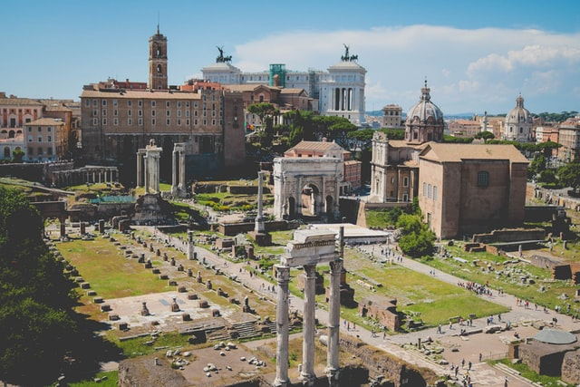

PLACES TO VISIT IN ITALY

Rome
A heady mix of haunting ruins, awe-inspiring art and vibrant street life, Italy’s hot-blooded capital is one of the world’s most romantic and charismatic cities.

Abruzzo
Featuring unspoilt beaches, natural lakes, beautiful landscapes and authentic villages, Abruzzo has everything needed to help you relax in a tranquil setting.

Sicily
Eternal crossroads of the Mediterranean, the gorgeous island of Sicily continues to seduce travellers with its dazzling diversity of landscapes and cultural treasures.
THINGS TO DO IN ITALY
Catacombs, Rome
The Catacombs of Rome are former underground burial grounds that date from the second to the fifth century and were principally used by Christians and Jews. The catacombs are subterranean passageways that were used as place of burial for a number of centuries

Lake Scanno, Abruzzo
Lake Scanno is the largest natural lake in Abruzzo. Not everyone knows, in fact, that most of the lakes in the region have been created artificially to generate electricity. Lake Scanno, on the other hand, was formed naturally due to a landslide on Mount Genzana, which blocked the course of the river Tasso, flooding the surrounding valley and giving rise to the lake. Here you will find boats to hire, beautiful scenery and water that has won a blue flag making it perfect for swimming.